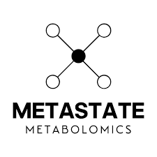

New York University | Stern School of Business
Research Assistant
Jun 2025 - Present
Responsiblities
- Optimised data infrastructure by migrating MySQL to DuckDB using R, improving query performance by 99.8%.
- Collaborated with the DHL Global Connectedness team in Germany to design interactive analytics and visualizations for the Global Connectedness Tracker Report - Oct 2025.
- Engineered Grafana dashboards for real-time data monitoring, reducing issue detection time by 50%, enhancing decision speed.

Metastate Bio Inc.
Software Engineer Intern
May 2025 - Aug 2025
Responsiblities
- Developed interactive Angular dashboards for visualizing synthetic biology simulations, allowing researchers to monitor over 100 experiments in real time and accelerating decision-making by 30%.
- Resolved database integrity issues in Java and MySQL, restoring accurate data for critical Z+ research workflows.
New York University | High Performance Computing (HPC) Lab
Software Engineer
Feb 2025 - May 2025
Responsiblities
- Developed a web application, "Research Connections" used by NYU Research team, using Typescript, Node.js, HTML/CSS, Docker, GitLab to facilitate research collaborations, for identifying potential universities for funding opportunities.
- Focused on scaling the application to handle increased data volumes and user traffic.
- Designed and implemented CI/CD pipelines to streamline development and deployment processes.
Freshworks
Software Engineer
Feb 2021 - Mar 2023
Responsiblities
- Worked on the Payments team building REST APIs for the SaaS CRM web app 'Freshservice' using Java, Ruby, React, JavaScript, AWS, Docker and Kubernetes, enhancing global payment workflows.
- Collaborated with a 15-member team in an Agile environment following SDLC, to develop the subscriptions and onboarding module.
- Executed migration of 70,000 customer accounts across 14 global sites to the new billing platform with zero downtime.
- Collaborated directly with customers to resolve 100+ low, medium and high priority issues ensuring timely ticket closure and improving customer satisfaction.
- Mentored 2 graduate engineering trainees, assigning tasks and reviewing pull requests, to maintain code quality.
- Resolved 50+ high priority bugs and addressed cross-site scripting vulnerabilities, improving application security.
- Improved APIs' test coverage from 70% to 85% by writing RSpec and mini test cases, reducing production defects.